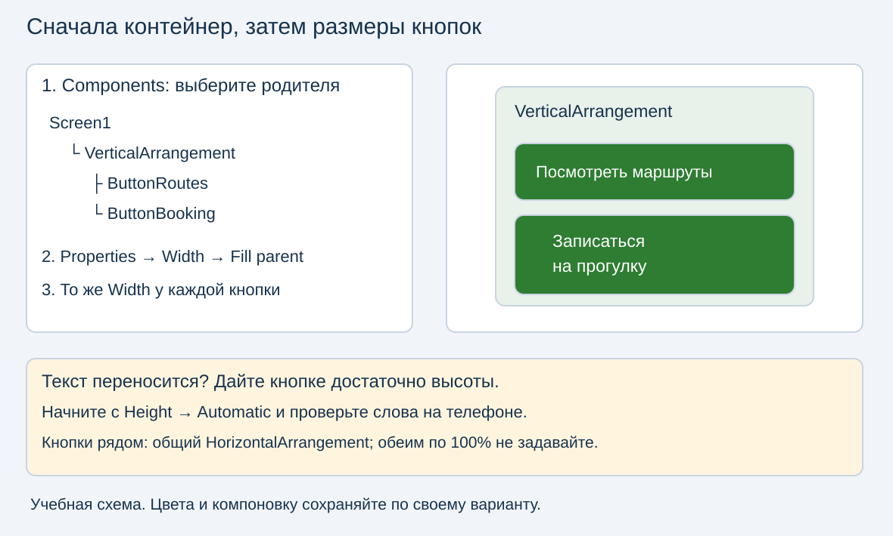
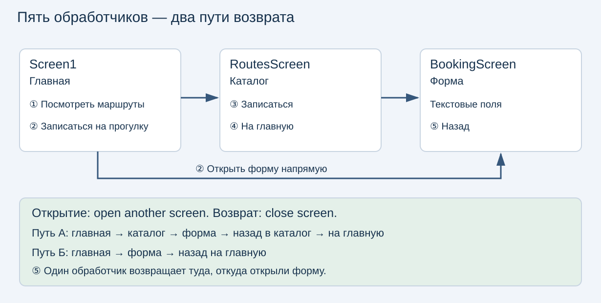
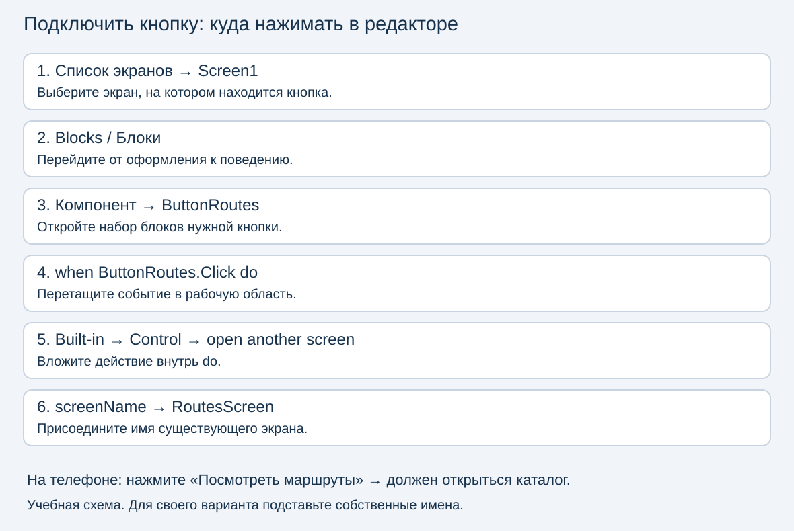
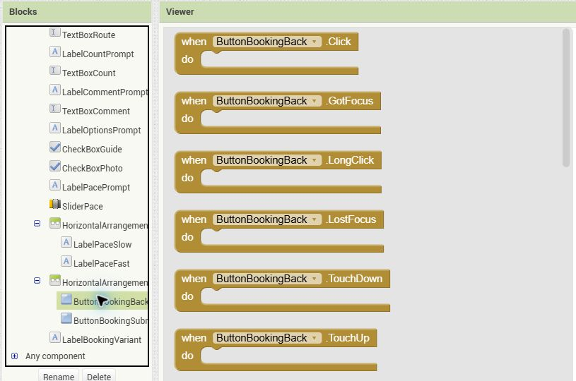
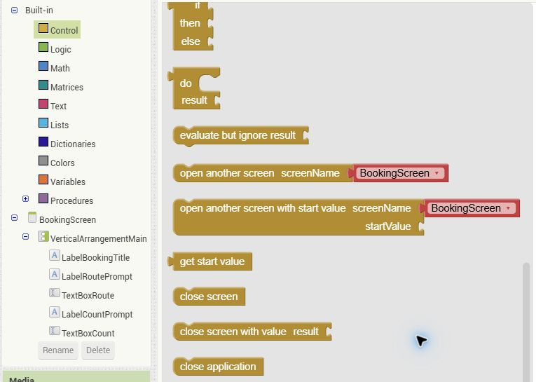
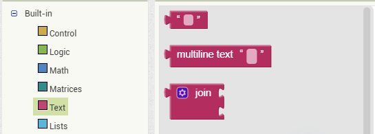
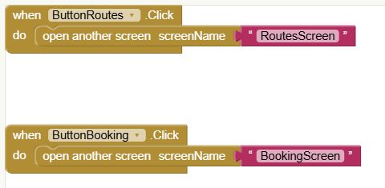
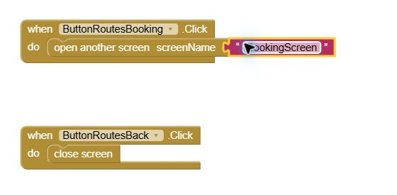
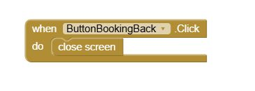
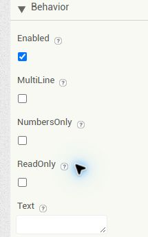

Доработка многоэкранного приложения в MIT App Inventor
Скачать и попробовать образец
Скачать APK для Android — «На тропе», вариант 01
Версия 1.0.0 от 16 октября 2026 года; размер 3,63 МиБ. Откройте ссылку на Android-телефоне, скачайте файл и откройте его для установки. Android может запросить разрешение на установку для браузера или приложения, которым открыт файл. APK предназначен для Android; на iPhone он не устанавливается.
Попробуйте два маршрута: главная → каталог → форма → назад → на главную и главная → форма → назад. В форме наберите слово, исправьте букву и введите фразу в поле пожеланий. «Отправить» пока не выполняет отправку данных.
Это учебный образец первого варианта; в собственной работе сохраняйте свой вариант и проект. Проект успешно собран в APK; работа на реальном телефоне на момент выпуска ещё не проверена.
Что превращает макет в приложение
В Designer мы задаём, что видно: надписи, поля, кнопки и расположение. В Blocks задаём, что происходит после действия пользователя. Нажатие кнопки — событие Click; открытие другого экрана — действие внутри обработчика этого события.
Кнопка с текстом «Открыть каталог» сама не знает, какой экран открыть. Её видимая надпись Text и внутреннее имя компонента — разные вещи. Например, «Посмотреть маршруты» — надпись, ButtonRoutes — имя кнопки, RoutesScreen — имя экрана назначения.
У всех 39 вариантов одинаковая логика: главная, каталог и форма. Имена и надписи берите из собственного листа. В варианте 01 кнопки называются иначе, чем во многих остальных вариантах: копировать его имена без проверки нельзя.
Кратко: ровные кнопки и читаемые слова
На повторение достаточно 10–12 минут. Сначала найдите компонент в дереве Components, затем измените свойство в Properties. Проверяйте результат на телефоне: Viewer в браузере не заменяет проверку реального размера экрана.
| Что исправляем | Что выбрать и настроить | Что проверить |
|---|---|---|
| Кнопки столбиком разной ширины | Общий VerticalArrangement: Width → Fill parent; обе кнопки: Width → Fill parent |
Левые и правые края совпадают |
| Кнопки «Назад» и «Отправить» в одном ряду | Общий HorizontalArrangement на всю ширину; согласованные ширины кнопок, например по 48% |
Кнопки умещаются вместе; место между ними учитывается |
| Длинная надпись обрезана | Увеличить доступную ширину; убрать слишком маленькую фиксированную высоту, начать с Height → Automatic |
Все слова видны; при переносе хватает высоты |
| Текст внутри кнопки расположен неудачно | Свойство кнопки TextAlignment; для текста кнопки обычно выбрать центр |
Текст расположен внутри кнопки как задумано |
| Элементы группы прижаты к неправильному краю | AlignHorizontal / AlignVertical у контейнера |
Меняется расположение дочерних элементов, а не только текста |
| Поле не имеет понятной подписи | Отдельный Label над TextBox; пример в Hint |
После ввода слова назначение поля по-прежнему понятно |
| Длинная форма не помещается | Scrollable у экрана формы; достаточная высота многострочного поля |
Можно добраться до нижних элементов на телефоне |

Это учебная схема, не снимок редактора. Fill parent означает «заполнить родительский контейнер»: узкий контейнер даст узкую кнопку. Поэтому проверяем сначала родителя. В русском интерфейсе ориентируйтесь также на смысл свойства: ширина, высота, выравнивание.
Для кнопок рядом не задавайте обеим ширину 100%: каждая запросит всю ширину строки. Число 48% — отправная точка для проверки на телефоне, а не новое требование ко всем макетам. Сохраняйте компоновку своего варианта. Не уменьшайте шрифт настолько, что надпись становится трудно прочитать.
Карта пяти переходов

Стрелки показывают действия пользователя в приложении. У формы один обработчик «Назад», но два возможных места возврата: это зависит от того, откуда её открыли.
| № | Где находится кнопка | Действие | Блок |
|---|---|---|---|
| 1 | Главная: открыть каталог | Открыть второй экран | open another screen |
| 2 | Главная: открыть форму | Открыть третий экран | open another screen |
| 3 | Каталог: открыть форму | Открыть третий экран | open another screen |
| 4 | Каталог: на главную | Закрыть каталог | close screen |
| 5 | Форма: назад | Закрыть форму, вернуться к предыдущему экрану | close screen |
На главной два обработчика, в каталоге два, в форме один. Кнопка «Отправить» пока остаётся визуальным элементом. Ввод слов в TextBox работает средствами самого компонента и не требует обработчика отправки.
Куда нажимать в редакторе
Ниже разобран вариант 01 на реальном проекте Variant01Demo, открытом в MIT App Inventor. JPEG-изображения — снимки редактора от 16 октября 2026 года; SVG выше — учебные схемы. Откройте свой лист и сопоставьте имена перед сборкой блоков. Если нужные экраны уже созданы, повторно добавлять их не надо.

Схема показывает последовательность действий, а не точное положение панелей в конкретной версии интерфейса. Редактор выбирает экран для редактирования; на телефоне переход выполняется только после нажатия запрограммированной кнопки.
Первый переход: с главной в каталог
Шаг 1. Выберите экран и кнопку. В списке экранов сверху выберите Screen1, затем нажмите Blocks / Блоки. Слева найдите ButtonRoutes и нажмите её имя. Для другой кнопки открывается такой же набор, но с её собственным именем.

На этом снимке открыт набор кнопки возврата ButtonBookingBack. Нужный блок — самый верхний, when … .Click do. Для перехода в каталог откройте таким же способом ButtonRoutes. Не выбирайте LongClick, TouchDown или зелёные блоки свойств.
Шаг 2. Возьмите событие. Перетащите when ButtonRoutes.Click do в белую рабочую область справа. Внутрь его пустой области do будем вставлять действие.
Шаг 3. Найдите действие в Control. Слева нажмите Built-in → Control / Встроенные → Управление и прокрутите открывшийся набор вниз до команд работы с экранами.

Для открытия нужен open another screen — первая команда открытия на снимке. Для возврата — отдельный короткий close screen. Команды open another screen with start value, close screen with value и close application здесь не используем.
Перетащите open another screen внутрь do. Блок должен присоединиться к событию. Блок, оставленный рядом на белом поле, после нажатия кнопки не выполнится.
Шаг 4. Задайте экран назначения. В гнезде screenName должно стоять RoutesScreen. В открытом редакторе блок из Control уже предлагается с розовым блоком выбора имени экрана: раскройте список и выберите нужное имя. Значение по умолчанию на снимке — BookingScreen, его нужно заменить на RoutesScreen для кнопки каталога.
Если гнездо пустое, используйте Text → пустую строку — самый верхний розовый блок в следующем наборе. Присоедините его к screenName, нажмите белое поле между кавычками, введите RoutesScreen и подтвердите Enter. Именно такой способ использован в готовом образце на следующем снимке.

Шаг 5. Сравните собранные блоки. На Screen1 должно получиться два обработчика: первый открывает каталог, второй — форму. Добавьте второй таким же способом для ButtonBooking, подставив BookingScreen.

Верхний обработчик: ButtonRoutes.Click → RoutesScreen. Нижний: ButtonBooking.Click → BookingScreen. Розовые блоки соединены с входами screenName, золотые команды открытия вложены в do.
Шаг 6. Проверьте на телефоне. Нажмите «Посмотреть маршруты». Должен открыться каталог. Переключение экранов в верхнем списке редактора выбирает место редактирования; оно не доказывает работу перехода в приложении.
Второй и третий переходы: открыть форму
На Screen1 добавьте событие кнопки формы: в варианте 01 ButtonBooking.Click. Внутри разместите open another screen с именем BookingScreen.
Затем в списке экранов редактора выберите RoutesScreen, снова откройте Blocks и найдите кнопку ButtonRoutesBooking. Для её события Click задайте открытие BookingScreen. Блоки каждого экрана редактируются отдельно. Событие кнопки каталога не ищут в наборе компонентов Screen1.

Это весь набор навигации RoutesScreen: верхняя кнопка открывает форму, нижняя закрывает каталог. Для второго обработчика используйте следующий приём возврата.
Четвёртый и пятый переходы: вернуться
На RoutesScreen выберите ButtonRoutesBack, добавьте Click, внутри разместите Control → close screen. На BookingScreen сделайте то же для ButtonBookingBack.

Весь код возврата формы: when ButtonBookingBack.Click do и вложенный close screen. У блока закрытия нет входа для имени экрана. Не добавляйте к нему строку Screen1.
Для возврата не открывайте новый Screen1. Представьте стопку карточек: открытие кладёт новую сверху, закрытие снимает верхнюю. Если форма открыта из каталога, под ней каталог. Если с главной — главная. Поэтому один close screen решает обе задачи. Сам Screen1 в этой работе не закрываем.
Проверка ввода в форму
Label показывает текст, TextBox позволяет его вводить. Поле должно быть доступно: Enabled: true. Для обычных слов используйте NumbersOnly: false и ReadOnly: false; для количества участников числовое ограничение допустимо по смыслу варианта. Hint — подсказка пустого поля, а не введённое значение.

Настройки настоящего TextBoxRoute: Enabled включено; NumbersOnly и ReadOnly выключены. Снимок свойств подтверждает настройку поля; проверку набора текста выполняем отдельно на телефоне.
На телефоне коснитесь текстового поля, дождитесь клавиатуры и наберите, например, «Проба». Удалите последнюю букву и допишите «Проба ввода». Слово должно появляться внутри поля, а не вместо его отдельной подписи. В поле пожеланий введите несколько слов; если оно многострочное, проверьте перенос. Вводите учебные данные без персональных сведений.
Если клавиатура закрывает низ формы, сначала проверьте прокрутку; для доступа к кнопкам клавиатуру можно скрыть. Не путайте системную кнопку скрытия клавиатуры с кнопкой «Назад» в самой форме. В приёмке переход проверяем именно кнопкой приложения.
Сохранение текста после закрытия и повторного открытия формы не является требованием этой работы. Проверяем набор и редактирование, пока форма открыта.
Вопросы перед практикой
- Почему кнопка с надписью «Каталог» может ничего не делать?
- На каком экране редактора искать событие кнопки возврата из формы?
- Что поставить в
screenName: заголовок экрана или его внутреннее имя? - Почему после формы можно вернуться в два разных места одним блоком?
- Чем выравнивание контейнера отличается от выравнивания текста кнопки?
- Как на телефоне доказать, что поле допускает ввод и исправление слов?
Продолжение: практика — завершение и показ на телефоне.